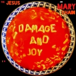
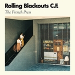
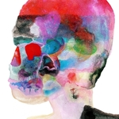

Quick Takes (March 2017)
Let's cut right to the chase: March was loaded with too many outstanding release, so much so that Carl and I could've easily reviewed twenty albums this month.
As you can see by the amount of 8's below, including two Believe the Hype endorsements, there was no shortage of quality. I thoroughly enjoyed Rolling Blackout Coastal Fever's stellar EP, arguably one of the best indie rock records of the first half of the year, while Carl effusively praised Jay Som's emotional-charged second effort. And both of us gave showers of praise to two veterans artists (Aimee Mann, Spoon) artists still capturing our attention with new and compelling statements.
What were your favorite albums during the month of March? Anything we didn't get to review on our site that we should've? You can always reach us on facebook, or on our official twitter page. - Juan
...
 Aimee Mann
Aimee Mann
Mental Illness
(SuperEgo Records)
In the past decade, Aimee Mann has mostly coasted with a string of pretty, if inoffensive, albums that held an allegiance to the foregone days of adult contemporary. Though they mostly upheld a stately, midtempo approach, Mann has always brought up a slew of uncommon concepts that far outshined their musical accompaniments. To be fair, she’s also perfected this format with a natural confidence that puts many of her contemporaries to shame. It does raise the question: why change things too much when it still wears well? Surprisingly, Mental Illness is Mann’s definitive affirmation, one that explores the ways in which everyday people struggle to function with life’s challenges. The album’s title doesn’t just hint at it, it broadly expresses it, and Mann is merely musicalizing these characters with the respect that they deserve without ever encroaching on their space. While there’s a melancholy that filters through her soft waltzes, Mental Illness is first and foremost an album about achieving self-sufficiency through trial and blunder. And in doing so, she once again stands tallest, and quietest, in an exceptionally consistent career. [8/10] Juan Edgardo Rodríguez
 Blanck Mass
Blanck Mass
World Eater
(Sacred Bones)
Those grinding teeth are telling. World Eater treats confrontation as a hierarchy of need, when everything seems hopeless and a colossal malady is imminent because there’s no need to cooperate anymore. It sounds like an ambitious concept for Benjamin John Power, one half of Bristol electronic disrupters Fuck Buttons, but he’s been working himself up to this point after a pair of releases that explored more appeasing forms of ambience with dancefloor-ready sounds. The songwriter in Power prevents him from ever keeping things too monotonous or repetitive, as Silent Treatment and Please tease familiar techno motifs even if their ominous grooves provoke desperation rather than relaxation. But World Eater is stricter with its industrial constitution, which explains why tracks like The Rat and Rhesus Negative both integrate cheeky mechanical beats with an otherwise menacing air. It may be Power’s most fatalistic declaration, but also his most engagingly diverse, and his marked exasperations do reflect a not-so-distant dystopia that suitably aligns with today’s societal disconnect. [8/10] Juan Edgardo Rodríguez
 Jay Som
Jay Som
Everybody Works
(Double Denim)
Melina Duterte’s debut LP as Jay Som is an intimate collection of songs that more than vindicate the Bay Area buzz kick-started by a woozy Bandcamp release over a year ago. Duterte recorded Everybody Works entirely in her bedroom studio, and its snug, unhurried, duvet-wrapped warmth intensifies any previous definitions of the bedroom pop genre. The songs are beautifully and simplistically crafted, ranging from the Police-like funk of One More Time, Please and the gorgeous Mac DeMarco slack of Baybee to the serene indulgence of album closer For Light. With such a huge repertoire crammed into a record not much longer than 30 minutes, it’s all the more impressive that the tracks mesh together so seamlessly, never losing the cosy, affectionate motif that hangs over its entire runtime. In the sumptuous hook of the album’s lead single The Bus Song, Duterte appeals to “take time to figure it out.” She has, and she’s figured out a way to put together a near-perfect bedroom-recorded album. [8/10 – Believe The Hype] Carl Purvis
Jesus and Mary Chain
Damage and Joy
(Artificial Plastic)
It’s been almost twenty years since The Jesus and Mary Chain released 1998’s Munky, an overwhelming sendoff of equally brash and sentimental rock n’ roll that demonstrated how the Reid brothers were cramming in too many misguided and tired ideas. So to see them return with new material after their recent Psychocandy tour does invigorate the JAMC name, as it’s also a good way to ultimately clear the air after a comically contentious breakup. Damage and Joy does continue to highlight their penchant for leather-clad ballads and thick, riffy guitars with the occasional surprises. Their heart is still in the right place, as they gallop through an assortment of snarly-toothed rockers with a flighty disposition that contradicts their bitter, oftentimes empty platitudes. It’s no surprise that it excels when they’re cocky romantics (Song for a Secret, Presidici (Et Chapaquiditch) ), which bodes better than when they channel their former selves with laughably juvenile observations (War on Peace, Get on Home). So JAMC’s reclaim for glory is expectedly uneven: it’s as carelessly abrasive and reverb-heavy as it should be, but it’s also mounted with a heavy number of throwaways that document different periods of their celebrated past without a clear notion of how they should move forward. [6/10] Juan Edgardo Rodríguez
 Kelly Lee Owens
Kelly Lee Owens
Kelly Lee Owens
(Smalltown Supersound)
I know this is only the second entry of mine in this month’s Quick Takes, but I feel the need to drop a disclaimer noting that this has been an amazing month for high quality releases – something that will be reflected in my ratings out of ten for all of the records I’ve had the pleasure of covering. Like Jay Som above, Kelly Lee Owens’ self-titled debut LP is up in the higher reaches of the March rankings. The meticulous attention to detail in the construction of this album is stunning at times, and the ability of Owens to mesh mechanical progression with transcendent fragility is artful in its refinement. The growth of the album is hydrological in its movement, squeezing its entire body into precise hooking niches before expanding into estuaries of graceful grooves. Owens consistently and effortlessly locates sweet spots without ever falling into a specific alcove, showing a maturity and understanding of her craft seldom seen on a debut LP. Don’t be surprised to see a clamour of megastars to attempt to recruit her services in the near future. [8/10] Carl Purvis
 Lydia Ainsworth
Lydia Ainsworth
Darling of the Afterglow
(Arbutus)
Lydia Ainsworth has a unique way of blending the artful with the ordinary. But while many of today’s pop artists insert experimentation to enhance their mainstream ambitions, Ainsworth wants to inhabit them with an almost presumptuous sense of ownership. It leads into an awkward middle ground where we’re not entirely sure if she’s genuinely vying for pop stardom or making a mockery out of it. There’s no denying that she can write straightaway pop songs with Hot 100-like tropes, as tracks like Ricochet and I Can Feel It All fuse chilly electro-pop with R&B vocal stylings that are dime-a-dozen in both mainstream and underground spheres. Others, like Afterglow and Spinning, demonstrate a natural ability to insert ethereal motifs into basic arrangements, done with a facility that discloses her penchant for scheming juxtapositions. And don’t even get me started on that insufferable Chris Isaak cover. But while Ainsworth is getting closer to making an impact with her sultry romanticism, she also hasn’t refused to give up that producers’ mentality that stifles her more spontaneous urges. [4/10] Juan Edgardo Rodríguez
Rolling Blackouts Coastal Fever
The French Press
(SubPop)
Rolling Blackouts Coastal Fever may have just found a way to move their music forward with an uncomplicated tactic. A more melodic counterpart to their first EP Talk Tight, The French Press further showcases the Melbourne quintet’s beautifully crafted arrangements with a pinch of lyrical amusement. It’s also less wry and more sensitive, taking a more considered approach that really makes their three-guitar assault beam ever more with a rich amount of hooks. The songs obviously sound familiar, but it’s in how they re-enliven the cream of the crop of college rock’s past that proves they may be up to something singular: there’s fine, blistering rockers (Sick Bug), ringing guitar pop (The French Press), chiffony acoustic anthems (Dig Up), and charged-up dueling jangle (Julie’s Place), all of them immediately engaging. Each and every selection here has loads of character, confidently bringing back the kind of polished guitar dynamics that many contemporary indie rock bands either take for granted or don’t have the capacity to arrange into sharp, rock-sculpted songs. It completes a pair of smart and skillful EP’s that signifies a promising future. [8/10 - Believe the Hype] Juan Edgardo Rodríguez
Spoon
Hot Thoughts
(Matador)
In the run-up to the release of Hot Thoughts, I saw a stat that surprised me: Spoon are Metacritic’s most well-reviewed band of the 2000s, pipping Sigur Ros, Super Furry Animals and Sleater-Kinney to the gong. As a gent who isn’t a fanatical follower of the Texas veterans - but aware of their perennial critical acclaim nonetheless – I was instantly taken in by the paranoid, agitated arrangement of the title track of their new release. When I did get ahold of the album proper, I was taken in further by the jerky invention and studio sorcery of the record as a whole. Hot Thoughts the track is the musical equivalent of a lover who has been the victim of an unfaithful partner, accusing and defensive in its setup. ListenI’llwhispertohearit picks up where Hot Thoughts leaves off, becoming more and more suspicious with each groove shift. The whole record is crafted with an air of distrust, but its execution is surgically precise. Spoon’s stream of critical acclaim shows no sign of slowing down any time soon. [8/10] Carl Purvis
 Tei Shi
Tei Shi
Crawl Space
(Insomniac)
Valerie Teicher’s debut LP displays an extensive range of styles branching from a nucleus made up of R&B sensibilities. The album’s title is derived from a ‘crawl space’ that Teicher used as a child to confront her fear of the dark, and although there are swathes of introspection that could be associated with such a theme, its songs are generally singular, dreamy slices of artistic R&B that showcase a glacial, piercing voice. Crawl Space boasts some great pop songs. Lead single Keep Running is driven by a clouting bassline that is the foundations for Teicher to deliver an anthemic chorus. Creep incorporates a reggae-infused undercurrent from which digital glitches and vocal aerobics negotiate a sensual trapeze. The jazz-café drums of Baby provide a pressing groove to juxtapose a sun-soaked, psychedelic arrangement. As a product of Argentina, Colombia, Canada and Boston’s Berklee College of Music, Tei Shi has honed a dynamic spectrum of poppy R&B full of dexterity and revelations, and produced a solid debut LP in the process. [7/10] Carl Purvis
Temples
Volcano
(Heavenly Recordings)
The second full-length effort from Kettering quartet Temples is another solid effort, but as with 2014 debut Sun Structures, Volcano lacks the spark that should be propelling the band into precocious territory. It’s impossible not to compare them to Tame Impala, with rippling base soundscapes, white-funk grooves and a feather-light male falsetto. However, there’s a sprig of Britishness that makes Temples a related species as opposed to an imitator. It’s hard to put your finger on it, at least until the chiming synths in the album’s opening track remind you of an ice cream van meandering into a northern council estate. Roman God-like Man is an even more obvious nod to the Union Jack, tipping its trilby to The Kinks and later The Jam’s David Watts. Volcano is strong without ever soaring into brilliance, and has been assuredly dressed and produced in a home studio. Temples aren’t shy in applying a hazy, glitzy gloss to a lot of their work, but the strength of an ungarnished tune – Oh! The Saviour – shows that their rare disrobed moments can be stronger than their decorated ones. [7/10] Carl Purvis
19 April, 2017 - 04:16 — No Ripcord Staff